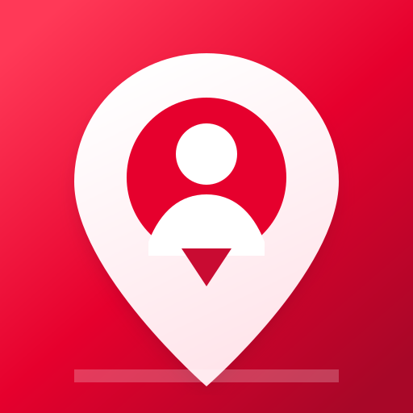
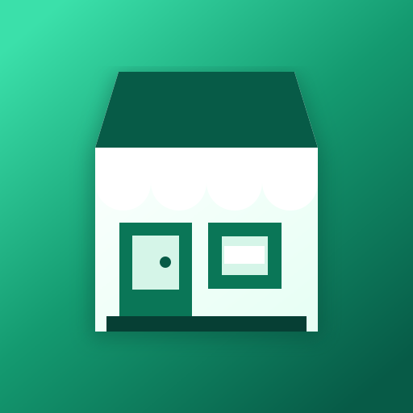
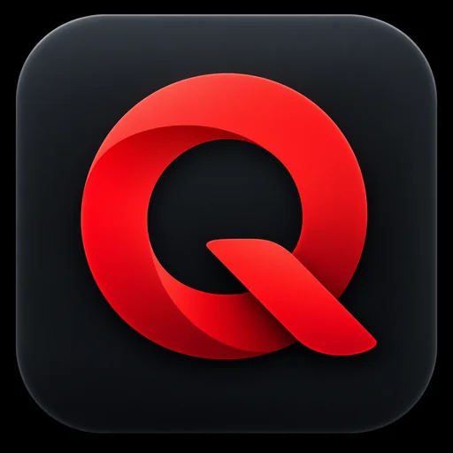

QueueGo
แอปลูกค้า — ค้นหาร้าน สั่งซื้อ และติดตามออเดอร์
เปิดใช้งานบนเว็บได้ทันที หรือดาวน์โหลดไฟล์ HTML ของแต่ละแอปไว้เป็นทางเข้า

แอปลูกค้า — ค้นหาร้าน สั่งซื้อ และติดตามออเดอร์

แอปร้านค้า — จัดการเมนู รับออเดอร์ และดูสถานะงาน

แอปไรเดอร์ — รับงาน จัดการเส้นทาง และอัปเดตสถานะ
ไฟล์ HTML เป็นหน้าเริ่มต้นของเว็บแอป การใช้งานต้องเชื่อมต่ออินเทอร์เน็ตและมีไฟล์บริการของ QueueGo